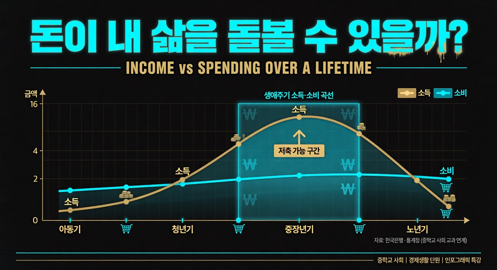
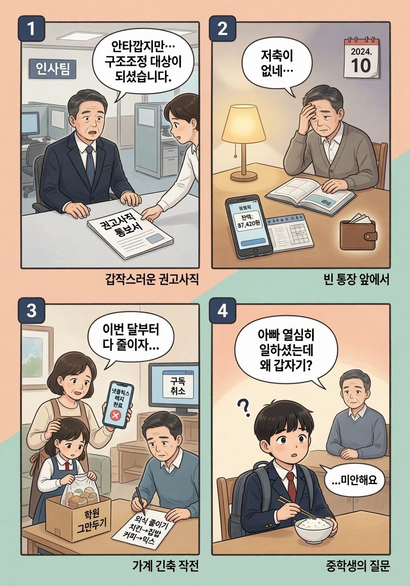
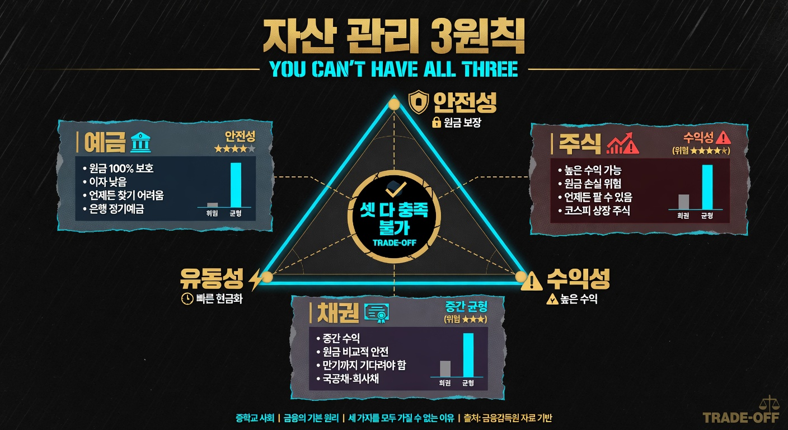
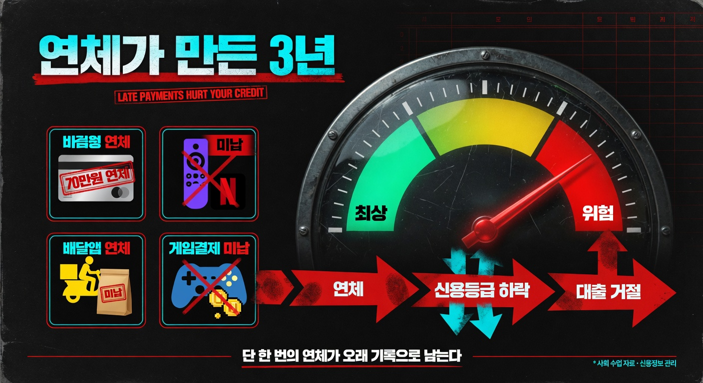

돈이 내 삶을 돌볼 수 있을까?

- 생애 주기에 따른 소득·소비의 변화를 설명할 수 있다.
- 자산 관리 3원칙과 주요 금융 상품의 특징을 이해할 수 있다.
- 신용의 의미와 신용 관리의 중요성을 설명할 수 있다.
- 생애 주기(生涯 週期): 개인의 삶을 시간 흐름에 따라 단계로 나타낸 것
- 자산(資産): 개인이 소유한 경제적 가치가 있는 것 (예금·주식·부동산 등)
- 포트폴리오: 위험을 줄이기 위해 여러 금융 상품에 나눠 투자하는 것
- 신용(信用): 돈을 빌려 쓰고 약속한 대로 갚을 수 있는 능력
- 연체(延滯): 약속한 기한이 지나도 돈을 갚지 않는 것
🏠 길동이 아빠는 50세에 갑자기 일을 잃었다.
회사가 어렵다며 권고사직. 저축은 거의 없었다.
그 다음 달, 집에서 보던 OTT(넷플릭스·쿠팡플레이)를 모두 해지했다.
다니던 학원도 두 곳을 끊었다. 가족 외식·배달도 한 달에 한 번으로 줄였다.
길동이는 이해가 안 됐다. "아빠 그동안 열심히 일하셨는데, 왜 갑자기 이렇게 됐지?"

💬 이게 너랑 무슨 상관일까?
지금 우리 집, 그리고 20년 후의 너에게도 똑같은 일이 일어날 수 있다.
일하는 시기는 정해져 있고, 일을 안 하는 시기에도 돈은 계속 들어간다.
이번 차시는 언제·어떻게 준비해야 하는가를 짚는다.
개인의 삶을 시간의 흐름에 따라 단계로 나타낸 것을 ①라 부른다.
(교과서 원문: "개인의 경제생활은 태어나서 죽을 때까지 소득과 소비가 달라지는데, 이를 생애 주기로 나타낼 수 있다." 천재교육 사회②(구정화) p.62)
| 시기 | 소득 | 소비 | 특징 |
| 아동기 | ② 소득에 의존 | 낮음 | 경제적으로 독립 전 |
| 청년기 | 점점 증가 | 비교적 적음 | 취업 후 소득 시작 |
| 중장년기 | 가장 높음 | 높음 | 자녀 양육·결혼 비용 |
| 노년기 | ③로 소득 중단 | 지속 | 저축·연금·보험으로 생활 |
소비는 평생 꾸준히 이루어지지만, 소득은 일정하지 않다.
소득이 없거나 적어지는 시기를 대비하여 ④가 필요하다.
(교과서 원문: "소비는 평생 이루어지지만 소득은 일정하지 않으므로, 미래를 위해 자산을 계획적으로 관리할 필요가 있다." 천재교육 사회②(구정화) p.62~63)
| 기준 | 의미 |
| ⑤ | 원금을 잃지 않을 가능성 |
| ⑥ | 이익을 얻는 정도 |
| ⑦ | 현금으로 바꿀 수 있는 정도 |
⚠️ 셋 모두를 충족하는 금융 상품은 없다. 안전성이 높으면 수익성이 낮고, 수익성이 높으면 위험도 크다.
(교과서 원문: "자산을 관리할 때에는 안전성, 수익성, 유동성을 고려하여 균형 있게 투자해야 한다." 천재교육 사회②(구정화) p.64)

| 상품 | 특징 | 강점 |
| 정기 예금·적금 | 목돈을 맡기고 ⑧를 받음 | 안전성 ↑ |
| ⑨ | 회사 소유권 일부 구매·원금 손실 가능 | 수익성 ↑ |
| ⑩ | 기업·정부가 발행·예금보다 수익성 높음 | 중간 |
| 보험 | 사고·질병 등 위험에 대비 | 안전 대비 |
(교과서 원문: "금융 상품에는 예금, 적금, 주식, 채권, 보험 등이 있으며 각각 안전성, 수익성, 유동성의 수준이 다르다." 천재교육 사회②(구정화) p.64~65)
한 상품에 모두 투자하면 위험이 크다. 여러 상품에 나눠 투자하는 것을 ⑪라 한다.
예금(안전) + 주식(수익) + 채권(균형) → 위험 ↓
⭐ 심화 (읽기만·외울 필요 X)
예금자 보호 제도로 1인당 5천만 원까지 국가가 보장한다. 은행이 파산해도 그 금액까지 돌려받을 수 있다. 더 자세한 내용은 교과서 p.65 참고.
💳 지아 언니는 22살, 첫 직장에 들어가자마자 신용카드를 만들었다.
친구들과 점심·카페·OTT 구독·배달앱·게임 결제·인스타에서 본 옷까지 전부 카드로.
"월급 들어오면 갚지" 하다가 한 달 결제가 70만 원.
자동이체 통장에 잔액이 부족해, 두 달 연속 연체 기록이 남았다.
3년 뒤, 자취방 전세 보증금 대출을 신청했다.
"고객님, 신용등급이 낮아 대출이 어렵습니다."
왜?

⑫은 돈을 빌려 쓰고 약속한 대로 갚을 수 있는 능력을 말한다.
신용이 높으면 더 낮은 이자로 더 많은 돈을 빌릴 수 있다.
(교과서 원문: "신용이란 돈을 빌려 쓰고 약속한 대로 갚을 수 있는 능력을 말하며, 현금 없이도 물건을 구매하거나 돈을 빌릴 수 있게 해 준다." 천재교육 사회②(구정화) p.66)
| 결과 |
| 외상 구매 불가 |
| 대출 이자가 높아짐 |
| 신용카드 발급 제한 |
| 심하면 금융 기관 이용 불가 |
신용을 가장 많이 떨어뜨리는 요인은 ⑬이다.
약속한 날짜에 돈을 갚지 않으면 ⑭이 하락하고, 이것은 장기간 기록으로 남는다.
(교과서 원문: "신용을 관리하기 위해서는 소득 범위 내에서 소비하고, 약속한 기한 내에 빚을 갚으며, 연체하지 않아야 한다." 천재교육 사회②(구정화) p.67)
| 방법 | 구체적 행동 |
| ⑮ 범위 안에서 소비 | 카드 한도보다 내 통장을 봐라 |
| 약속한 기한 지키기 | 자동 이체 설정으로 날짜 놓치지 않기 |
| 연체 기록 만들지 않기 | 통신비·구독료도 포함·자동 청구 주의 |
💡 중요: 통신비·구독 서비스도 연체하면 신용에 기록된다.
교과서 p.62 그래프를 보고 다음 질문에 답하시오.
| 질문 | 답 |
| 소득이 소비보다 많은 구간 (저축 가능)은? | |
| 소득이 소비보다 적어 부족한 구간은? | |
| 노년기를 대비하려면 언제부터 준비해야 하는가? |
100만 원이 있다. 세 상품에 나눠 투자한다면 각각 몇 %씩? 이유도 쓰시오.
| 상품 | 투자 비율 | 이유 |
| 예금 (안전성 높음) | % | |
| 주식 (수익성 높음·위험) | % | |
| 채권 (중간) | % |
다음 행동이 신용에 도움이 되면 ○, 해가 되면 ×
| 번호 | 행동 | ○ / × |
| 1 | OTT 구독료를 매달 자동 이체로 납부한다 | |
| 2 | 신용카드로 한도껏 써도 이번 달만 갚으면 된다 | |
| 3 | 게임 결제 자동이체를 깜빡해서 3일 연체했다 | |
| 4 | 소득이 없으니 카드 대신 체크카드만 쓴다 |
Q1. 길동이 아빠가 중장년기에 저축을 했다면 어떤 금융 상품 조합이 좋았을까? 3원칙을 근거로 설명해 보시오.
Q2. 지아 언니는 왜 25살에 대출이 거절됐을까? 연체와 신용 등급의 관계로 설명해 보시오.
Q3. "빚을 갚지 않는 사람이 늘면 나와 상관없는 이야기일까?" 금융 회사와 국가 경제의 연쇄 영향을 설명해 보시오.